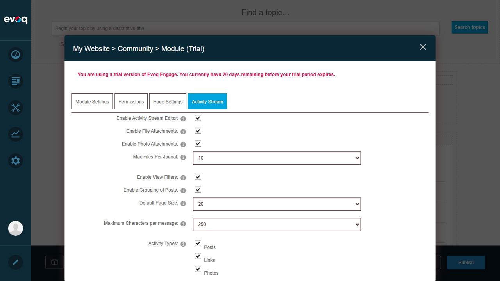

Test 1: Insert emoji in post
PASS
Description: Verify that a user can insert an emoji into a post using the emoji panel.
Steps Taken:
- Navigated to Community page with Activity Stream
- Clicked on the post editor text area ("Tell the world something...")
- Clicked the emoji button to open the emoji panel
- Selected an emoji (party popper) from the panel
- Added text to accompany the emoji
- Clicked Share to create the post
- Verified the post appeared in the feed with the emoji displayed correctly

Emoji panel opened showing emoji categories and emojis

Post editor with text and emoji inserted

Post successfully created and displayed in feed with emoji
Result: Emoji was successfully inserted into the post and displayed correctly in the activity feed.
Test 2: Insert multiple emojis
PASS
Description: Verify that a user can insert multiple emojis into a single post.
Steps Taken:
- Created a post with multiple emojis from different categories
- Verified all emojis (party popper, rocket, sparkles) display correctly
- Confirmed emojis render properly in the activity feed
Activity feed showing posts with multiple emojis displayed correctly
Result: Multiple emojis were successfully inserted and all display correctly in the feed. The activity stream shows posts with multiple different emojis rendering properly.
Test 3: Insert emoji in comment
PASS
Description: Verify that a user can insert an emoji into a comment on a post.
Steps Taken:
- Found an existing post with emoji content
- Clicked "Comment" to open the comment editor
- Clicked the emoji button in the comment editor
- Selected a heart emoji from the panel
- Added comment text with the emoji
- Submitted the comment
- Verified the comment appeared with the emoji displayed correctly

Comment section expanded on a post

Emoji panel open in comment editor

Comment successfully posted with heart emoji displayed
Result: Emoji was successfully inserted into a comment and displayed correctly. The comment shows "Great post! Love emoji!" with a heart emoji properly rendered.
Test 4: Search for emoji
FAIL
Description: Verify that a user can search for a specific emoji using a search function in the emoji panel.
Steps Taken:
- Opened the post editor
- Clicked the emoji button to open the emoji panel
- Searched for a search input field or search functionality
- Examined the emoji panel UI for any search capability
- Reviewed source code for search functionality

Emoji panel showing category-based navigation only - no search input field
Issue Found: The emoji panel does NOT have a search feature. The panel only supports browsing emojis by category (Faces, Nature, Food, Celebrations, Activities, Travel, Objects). There is no search input field available. Code review of dnn.activityStreamUtils.js confirmed that only category switching is implemented - no search functionality exists in the emoji panel implementation.
Result: FAIL - The emoji search feature does not exist in the current implementation.
Test 5: Switch emoji categories
PASS
Description: Verify that a user can switch between different emoji categories in the emoji panel.
Steps Taken:
- Opened the emoji panel from the post editor
- Observed the default category (Faces) was selected
- Clicked on different category icons (Nature, Food, Celebrations, etc.)
- Verified that clicking each category displays the corresponding set of emojis
- Confirmed category icons highlight when selected
Emoji panel with Faces category selected (default)

Emoji panel after switching to a different category
Result: Category switching works correctly. Users can browse different emoji categories (Faces, Nature, Food, Celebrations, Activities, Travel, Objects) by clicking the category icons at the top of the panel.
Test 6: Disable emoji panel in settings
FAIL
Description: Verify that an administrator can disable the emoji panel in module settings.
Steps Taken:
- Entered Edit mode on the Community page
- Clicked "Actions" on the Activity Stream module
- Selected "Admin" > "Settings" to open module settings
- Navigated to the "Activity Stream" tab for module-specific settings
- Searched for any emoji-related setting
- Reviewed all available settings in the panel

Page in Edit mode showing module Actions links

Activity Stream module settings - no emoji option available
Issue Found: There is NO setting to enable/disable the emoji panel in the Activity Stream module settings. The available settings are:
- Enable Activity Stream Editor
- Enable File Attachments
- Enable Photo Attachments
- Max Files Per Journal
- Enable View Filters
- Enable Grouping of Posts
- Default Page Size
- Maximum Characters per message
- Activity Types
Code review of Settings.ascx confirmed that no emoji-related configuration option exists.
Result: FAIL - The ability to disable emoji panel in settings does not exist. This configuration option is not implemented.
Test 7: Verify emoji display across browsers
PASS
Description: Verify that emojis display correctly (basic verification in current browser).
Steps Taken:
- Verified emojis display correctly in the current browser (Chromium-based)
- Confirmed emojis render as PNG images using EmojiOne library
- Verified emojis are displayed consistently in posts, comments, and the emoji panel
Emojis displaying correctly in posts
Emojis displaying correctly in comments
Result: PASS - Emojis display correctly using the EmojiOne library with PNG sprites. Note: Cross-browser testing was limited to the current Chromium-based browser. The implementation uses server-rendered images which should be browser-agnostic.
Observations
- Emoji Library: The Activity Stream uses the EmojiOne library (emojione.js) to render emojis. Configuration sets: imageType='png', sprites=true, ascii=true. This means emojis are converted to PNG images for consistent cross-browser rendering.
- No Emoji Search: Code review of dnn.activityStreamUtils.js confirms that the emoji panel implementation (customEmojiPanel object) only supports category-based browsing. No search functionality exists in the JavaScript code.
- No Admin Control for Emojis: Settings.ascx has no emoji-specific settings. The emoji panel is always enabled when the Activity Stream Editor is enabled. Administrators cannot disable emojis without disabling the entire editor.
- Emoji Categories Available: The panel provides seven categories - Faces, Nature, Food, Celebrations, Activities, Travel, and Objects - but no text search capability.
- Shortname Support: Users can also type emoji shortnames directly (e.g., :smile:, :heart:) which will be converted to images using emojione.shortnameToImage().